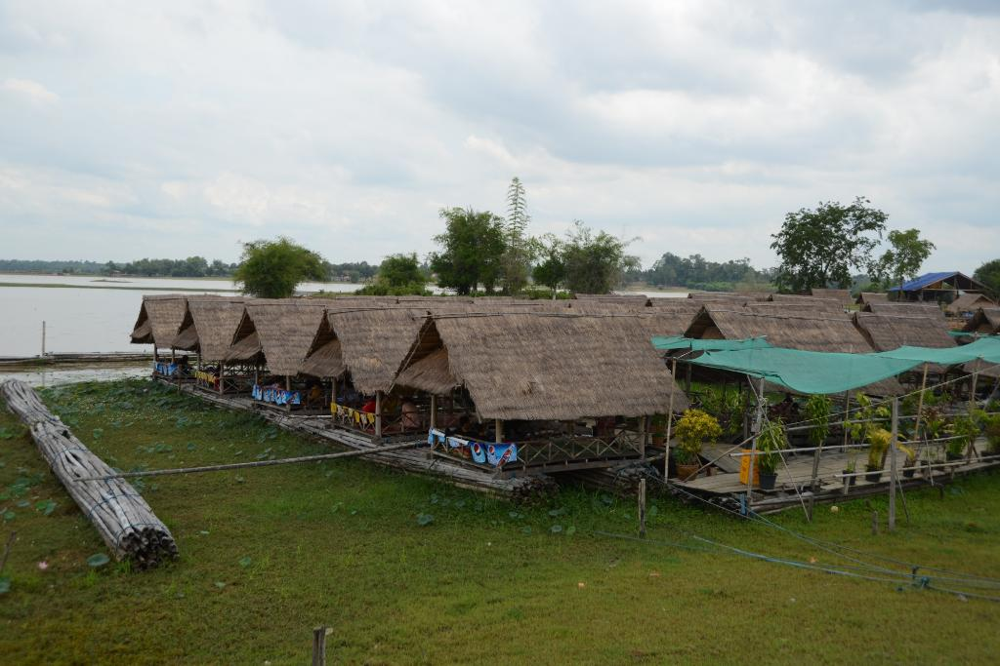

ບຶງວະ.
ບຶງວະ. ເມືອງໄກສອນພົມວິຫານ
ບຶງວະ ເປັນແຫຼ່ງທ່ອງທ່ຽວທຳມະຊາດທີ່ສວຍງາມ ແລະ ເປັນໜອງຂະໜາດໃຫ່ຍຕັ້ງຢູ່ບ້ານບຶງວະ ເມືອງໄກສອນ ພົມວິຫານ ແຂວງສະຫວັນນະເຂດ ຢູ່ທາງທິດຕາເວັນອອກຂອງເທດສະບານແຂວງເຊິ່ງຫ່າງຈາກຕົວເມືອງແມ່ນປະມານ 3 ກິໂລແມັດ ບຶງວະນັ້ນແມ່ນອ່າງເກັບນໍ້າເພື່ອໃຊ້ເຂົ້າໃນການເຮັດນາແຊງ ລວມໄປເຖິງການຜະລິດກະສິກໍາຕ່າງໆໃນລະດູແລ້ງຂອງຊາວບ້ານພາຍໃນບ້ານບຶງວະ ແລະ ນອກຈາກນັ້ນກໍ່ຍັງເປັນບ່ອນທໍາມາຫາກິນຂອງປະຊາຊົນເຊັ່ນ: ການຫາປາ, ກຸ້ງ, ຫອຍ ແລະ ອືນໆ.

+ ດ້ານການເຂົ້າເຖິງ.
ການເດີນທາງໄປແຫຼ່ງທ່ອງທ່ຽວບຶງວະແມ່ນໃຊ້ເວລາບໍ່ດົນປານໃດເນື່ອງຈາກສະຖານທີ່
ດັ່ງກ່າວແມ່ນຢູ່ບໍ່ໄກຈາກຕົວເມືອງປານໃດປະມານ 5 ກິໂລແມັດເທົ່ານັ້ນ ແລະ ເປັນເສັ້ນທາງປູຢາງຕະຫຼອດເສັ້ນ ໃນການເດີນທາງໄປແມ່ນຈະໄປໄດ້ຫຼາຍເສັ້ນທາງແຕ່ນັກທ່ອງທ່ຽວມັກຈະໃຊ້ເສັ້ນທາງຫຼັກຄື ເມື່ອອອກຈາກຕົວເມືອງໄກສອນພົມວິຫານໂດຍໃຊ້ເສັ້ນທາງສະຫວັນນະເຂດ-ເຊໂນຈະຜ່ານສະໜາມກິລາແຂວງສະຫວັນນະເຂດ ແລະ ໄປຮອດທາງວົງວຽນໄດໂນເສົາແລ້ວລ້ຽວຂວາເຂົ້າສູ່ເສັ້ນທາງໄກສອນພົມວິຫານສວ່ນຫຼາຍປະຊາຊົນມັກເອີ້ນຊື່ເສັ້ນທາງດັ່ງກວ່ານັ້ນແມ່ນເສັ້ນ A1 ເດີນທາງໄປະມານ 2 ກິໂລແມັດກໍ່ຈະເຫັນປ້າຍບອກທາງແວ່ບ້ານບຶງວະທາງດ້ານຊ້າຍມືແລ້ວລ້ຽວຊ້າຍໄປຕາມເສັ້ນທາງໄປບ້ານບຶງວະປະມານ 3 ກິໂລແມັດກໍ່ເຖິງສະຖານທີ່ທ່ອງທ່ຽວບຶງວະ.

+ ດ້ານກິດຈະກຳ
ບຶງວະເປັນບຶງຂະໜາດໃຫ່ຍ ແລະ ມີທີວທັດທຳມະຊາດທີ່ສວຍສົດງົດງາມ, ອາກາດ
ສົດຊື່ນເຢັນສະບາຍ ສິ່ງດັ່ງກ່າວໄດ້ດຶງດູດໃຫ້ຜູ້ຄົນໃນເມືອງຢາກອອກໄປສຳພັດເຖິງບັນຍາກາດ
ແສນຈະບໍລິສຸດ ໂດຍສະເພາະແມ່ນວັນພັກເສົາ-ອາທິດ ຫຼື ວັນພັກຕາມເທດສະການຕ່າງໆຈະ
ມີປະຊາຊົນອອກມາພັກຜ່ອນກິນເຂົ້າປ່າ ເພາະຢູ່ລຽບຕາມແຄມໜອງຈະມີຕູບນ້ອຍ ແລະ ຮ້ານ
ອາຫານເພື່ອໄວ້ໃຫ້ບໍລິການແກ່ນັກທ່ອງທ່ຽວທີ່ເດີນທາງໄປທ່ຽວຊົມ.